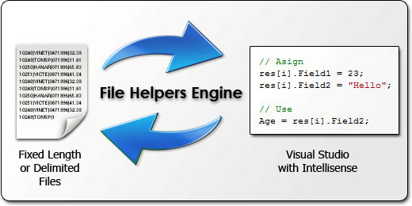
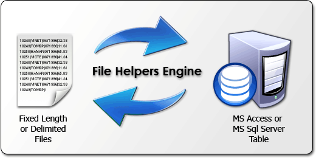

FileHelpers v 2.2 (Click to see the History)

FileHelpers is a free and easy to use .NET library to import/export data from fixed length or delimited records in files, strings or streams.
The idea is pretty simple:
You can strong type your flat file (fixed or delimited) simply describing a class that maps to each record and later read/write your file as an strong typed .NET array
The library also has support for import/export data from different storages like Excel, Access, SqlServer, etc.
Start using FileHelpers right now:
Free and Open Source
The FileHelpers library is completely free and released under the BSD License that allows the use of the code and binaries in all places, including commercial applications.
You can access the full source code of the library using a Subversion client via the Repository at SourceForge, or you can browse the code online with the excellent FishEye tool.
Basic Uses of the Library


Who needs the File Helpers Library ?
In almost every project there is a need to read/write data from/to a file of a specified format.
For example, log parsing, data warehouse and OLAP applications, communication between systems, file format transformations (for example from a fixed length to a CSV file).
This library aims to provide an easy and reliable way to accomplish this task.
Main Features
Easy to use: The FileHelpers library is straightforward to learn and use. (see EasyExample)
Auto Converters: The library has a set of converters for the basic types and can be easy extended to provide custom converters. (see ConverterBase and Converter Example)
RunTime Classes
from version 1.6.0 you can create your record class at run time, load them from files with source code or an Xml description (check the example)
High Performance: From version 2.0 the library doesn't use any more reflection to get or set the field values, now we use dynamic code generation (MSIL) and delegates
Master-Detail: You can read and write records with a master/detail pattern. (see Example1 and Example2)
Multiple record format support:
Event Support:
Microsoft Excel Storage: Allow you to extract and insert records between any source and an Excel file. (see ExcelDataStorage and ExcelDataLinkExample)
DataLinks: Provide a way to extract and insert records between a database and a file. (see DataStorage and FileDataLinkExample)
GenericDataLink: Allow you to copy records between two data stores (see GenericDataLink and DataStorage)
Asynchronous Mode: You can use the library to read line by line and not the whole file. (see Async Methods)
.NET Compact Framework Support From version 1.1, you can use the FileHelpers library for your PocketPC and WindowsCE developments. (thanks Pierre)
File Transform Engine: To convert files in one format to another (for example a file with CSV to a fixed length record format) (check the example)
Progress Notification: Provides feedback on the progress in each operation in the library (check the example)
.NET 2.0 Generics: The cast-less and strong-typed version of the engines (check the example)
.NET 2.0 Nullable Types
FileDiffEngine
Others Features
Files, Stream and String Support: You can use the library to read/write any stream or string, not only files. (see FileHelperEngine)
Different Error Behaviors: You can set the behavior of the library when an error is found (throw and exception, ignore, save and continue, etc) (see the examples)
Quoted String Support It allows you to say that the field must be read and written as Quoted String, like Excel CSV. (see FieldQuotedAttribute )
Data Table Operations: The library supports reading a file directly into a DataTable rather than an array
CommonEngine
Encoding Aware : You can define the encoding used to read and write files or streams. (see BaseEngine.Encoding)
NullValues : The library can identify null values and replace these with user supplied values. (see FieldNullValueAttribute)
Good Documentation : The library is fully documented, at least this is the intention =) and with a lot of Examples of Use.
Align and Trimming: You can set the processing mode of the in/out strings with a lot of attributes like FieldAlignAttribute and FieldTrimAttribute.
Licence (BSD)
FileHelpers Library is @Copyright 2005-2006 to Marcos Meli but it's source code and the binaries are free for commercial and non commercial use.
I'll be happy to hear in what project are you using the library, if you want to share this with me only, send a mail to:
References
One of the best references that assists in the development of this library is Designing .NET Class Libraries, a complete guide for design and programming of libraries and controls using the techniques of the creators and gurus of .NET.
Contact and Ideas
The main site of contact of the library is through the FileHelpers Forums
If you find that there is a feature that I must include, or you have a new idea (for the API, Source Code or Examples), let me know through the forums or sending an e-mail to
See also
{$FOOTER$}